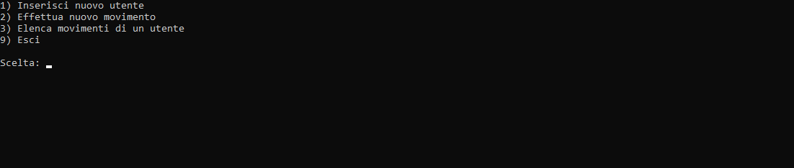
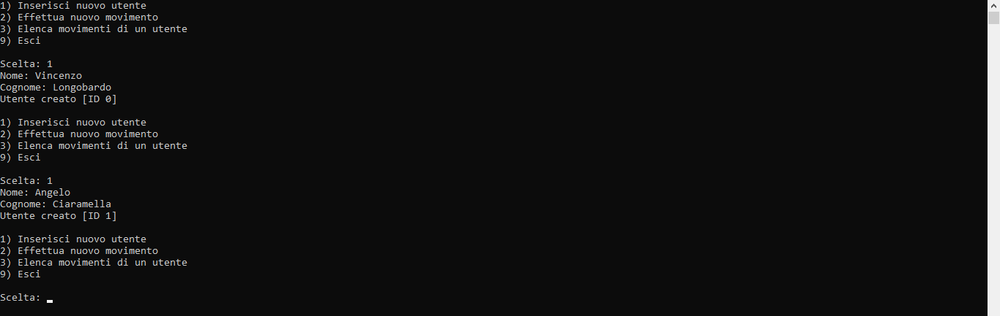
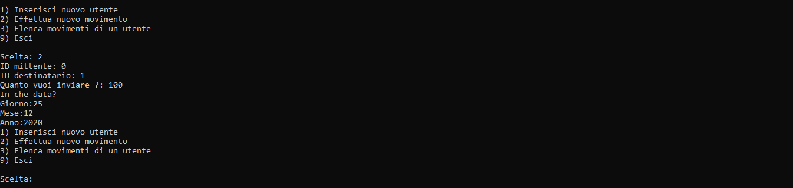
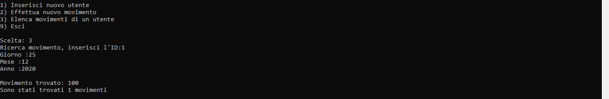
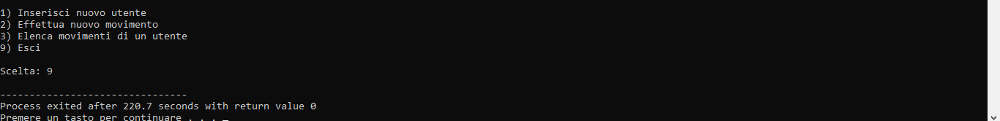

Conto corrente
Secondo Test

Successivamente il programma assegna automaticamente un codice ID


Nella foto sottostante possiamo notare che cliccando il tasto 3 possiamo controllare i propri movimenti, viene richiesto ID del proprio conto e successivamente per essere più precisi viene richiesto in che data si vuole l'elenco, in modo da ricevere il numero esatto di movimenti effettuati, in questo caso il secondo utente (ID 1) ha +100

Come ultimo movimento che possiamo effettuare è uscire dal programma cliccando il tasto 9
